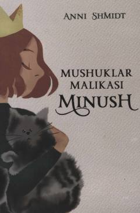

MMMushukdan insonga aylangan Minushning sarguzashtlari va adolat uchun kurashi haqidagi qiziqarli qissa.
Ushbu qissa mushukdan insonga aylangan Minush va uning do'sti, jurnalist Tibbe haqidagi qiziqarli voqealarni hikoya qiladi. Minush o'zining mushuk do'stlari yordamida shahardagi yovuz kimsalarning qilmishlarini fosh etib, adolatni qaror toptirishga hissa qo'shadi. Asar kitobxonlarni to'g'riso'zlikka va ezgulikka chorlaydi.